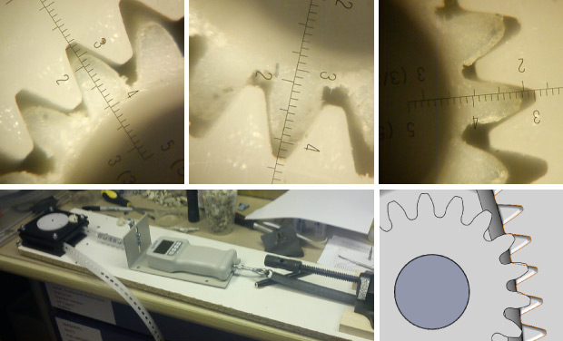

GravityLight
lighting for the developing countries

[Update 12 Feb]
We've taken the opportunity to draw breath as our current manufacturing partner has taken leave for Chinese New Year.
As the campaign was running so successfully we accelerated our programme and worked hard over the Christmas and new year period to issue revised data for a new iteration of development plastic parts.
We now have these parts and are currently testing under extreme loads to help understand points of failure in the mechanism. We have included some pictures below to illustrate this process. To help keep the manufacturing cost as low as possible we are using plastic rather than metal gears so it's vital that we rigorously test this aspect.
The additional funds raised through your fantastic support for the campaign has allowed us to further refine and test functionality ahead of trial. This means we are ironing out some of the issues we had thought we would have to address during the trial programme. So the good news is the trial units can be more representative of the product that we aim to finally bring to market.
It does mean that we are having to revise our schedule and it looks like we will slip the original expectation possibly by a couple of months. We want the lights to be as good as possible for this trial, and the additional R&D progress we are making will benefit the much larger production build we are now undertaking. We felt that all who await their own GravityLight would understand this and, hopefully agree.
We will post a more accurate schedule soon and of course will continue to provide updates on our general progress. One key aspect of which is identifying the candidates who will support the trial programme by distributing, controlling and feeding back the research on users' experiences.
More detailed updates will be posted regularly at www.deciwatt.org/updates.
All the best,
Team Deciwatt
info@gravitylight.org
12 February 2013
Thank You!
TERAWATT supporters

PETAWATT supporters
Carlos Espinosa
Daniel Zwolenski
David Curtis
Duane Fallon
Engenius Software
Jeffrey Mayner
Kathy Baglan
Kevin McGrath
Michael Nugent
Mike Cilento
Stefan Greth / MLP Mainz II
A realistic alternative to Kerosene lamps.
There are currently over 1.5 billion people in the World who have no reliable access to mains electricity. These people rely, instead, on biomass fuels (mostly kerosene) for lighting once the sun goes down. We propose a sustainable lighting solution powered by gravity.
GravityLight, an off-line project which is now at a working prototype stage.
Share the cause
Thanks to help of our supporters we have now successfully secured funding for the trial phase of the GravityLight Mk1.
We will gift them to villagers in both Africa and India to use regularly. The follow-up research will tell us how well the lights met their needs, and enable us to refine the design for a more efficient MK2 version. Once we have proved the design, we will be looking to link with NGOs and partners to distribute it as widely as possible. When mass produced the target cost for this light is less than $5.
Read more about the original brief which inspired thousands of people around the world to support GravityLight.